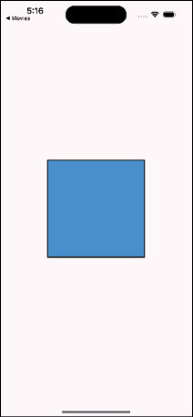
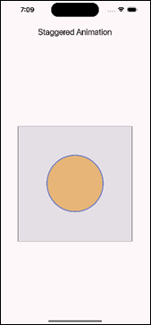
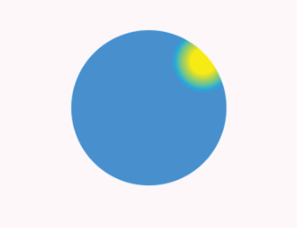

CHAPTER 9 Animations and Transitions
Introduction
In this chapter, you will learn all about the built-in animations that Flutter provides, as well as some third-party packages for handling transitions and animations. You will start out with some of the easier pre-built animation widgets and then customize your own. Finally, you will build some amazing animations for the movie app.
Structure
The chapter covers the following topics:
- Basic animation concepts
- Advanced animation techniques
- Animation widgets
- Custom animations
- Animation libraries and tools
- Movie app
Objectives
By the end of this chapter, you will have a solid understanding for how animations work in Flutter. You will be able to build you own animations as well as create custom animations. You will understand how to create animations and where to put them. You will learn about third-party packages for animations. Your movie app will look great as you move from page to page.
Basic animation concepts
Animations in Flutter are made up of a few different types of animations, including drawing-based, which uses graphics, and code-based, which focuses on widget layouts and styles.
For code-based animations, there are two different types: implicit and explicit. Implicit animations are just animations that change the values of another widget, while explicit use an animation controller to explicitly tell it when and how to run.
Implicit animations
Implicit animations give you less control than explicit animations but are easier to use. These widgets are of the type: AnimatedXXXX, where XXX could be a Container, opacity, positioning, padding, or any other attribute of a widget. All of these classes extend the ImplicitlyAnimatedWidget class. If Flutter does not have one already made for you, you can create your own. A very simple instance of an AnimatedContainer looks as follows:
AnimatedContainer(
duration: const Duration(milliseconds: 2000),
curve: Curves.easeInOut,
decoration: BoxDecoration(
color: selected ? Colors.blue : Colors.red,
border: Border.all(
color: Colors.black,
width: 2,
),
),
child: Container(),
),
There are two required parameters: duration, which defines how long the animation will run and the child, which will be the widget that is animated. This will show up as either a blue or red square that animates to the other color (Figure 9.1). Not shown is the onTap method that changes the selected value, causing the animation to start. It has a two-second duration and uses an easeInOut curve (explained as follows):

Figure 9.1: AnimatedContainer
Besides the color, you can animate the other properties of a container, like width and height. There are many more animated widgets. The following are a few examples:
AnimatedAlignAnimatedOpacityAnimatedPaddingAnimatedPositionedAnimatedSizeAnimatedScaleAnimatedRotationAnimatedSlideAnimatedIconAnimatedCrossFadeAnimatedSwitcher
These widgets modify their respective properties to change the underlying widget. Opacity will cause the widget to fade in and out. AnimatedPositioned is just like its Positioned widget and can only work inside of a Stack and move the widget inside of the Stack. Size and Scale animate the change in the size and scale of a widget. If you need to just perform one type of animation, then these widgets are a great solution. For more complex animations, you will need to use an implicit animation.
Tween animations
If you cannot find an animation that does what you need and you want to change a property of a widget, you can use the TweenAnimationBuilder widget. This widget uses a Tween class (like in-between) that has begin and end parameters for going from one property value to another.
The following is a TweenAnimationBuilder that animates the colors of a square:
TweenAnimationBuilder<Color?>(
duration: const Duration(milliseconds: 2000),
tween: ColorTween(begin: const Color(0xFF0D47A1), end: const Color(0xFFB71C1C)),
curve: Curves.easeInOut,
builder: (context, value, child) {
return Container(
decoration: BoxDecoration(
color: value,
border: Border.all(
color: Colors.black,
width: 2,
),
),
);
},
),
This is similar to the previous example. Note that to use a ColorTween, we had to specify a nullable Color for the builder type. Another type of builder is with a double value that translates (or moves) a square across the screen. The code is as follows:
TweenAnimationBuilder<double>(
duration: const Duration(milliseconds: 2000),
tween: Tween(begin: 0.0, end: 1.0),
child: Container(
width: 120,
height: 120,
color: Theme.of(context).primaryColor,
),
builder: (context, value, child) {
return Transform.translate(
offset: Offset(value * 200 - 100, 0),
//angle: 0.5 * pi * value,
child: child,
);
},
),
This just moves the square from the left side of the screen to the right side of the screen. If you use the child passed in the builder, you will improve performance as that entire widget tree does not have to be rebuilt each time.
Advanced animation techniques
If you need to do more than the basics, you need to learn more advanced animation techniques. We will cover explicit animations, specifically the animation controller. These animations are a bit more complex but allow you to create amazing movement in your app.
Explicit animations
Explicit animations give you more control over your animations but are a bit more complex. Explicit animations are named that way because you, or the user, tell it when to start and stop using an animation controller. If you want to handle multiple animations at the same time, you will need an animation controller.
AnimationController
An AnimationController is a class that controls the progression of animations. It does this by producing a beginning and ending set of values for the duration of the animation. So, the longer the duration, the smaller the incremental values between the begin and ending values. The controller can also stop, forward, and reverse an animation. In order to use an AnimationController, you need to provide a Ticker. This ticker handles notifying listeners of new values on every frame. There are several mixins that provide this functionality and can be attached to a State class. There are two key mixins:
SingleTickerProviderStateMixin: For a single controller.TickerProviderStateMixin: For multiple controllers.
We will be adding both an animation controller and the mixin to several classes to enable explicit animations. We will also need to change some classes to Riverpod classes to access movie information. To make the changes, make the following changes:
-
Open
detail_image.dart. Currently, the detail page has a hard-coded image. We will change that so that it will display the image passed in. In order to do that, we will need to change the class from a stateless widget to a stateful widget. Of course, we will useRiverpod's version:ConsumerStatefulWidget. Change the first two lines of the class to:class DetailImage extends ConsumerStatefulWidget { final String movieUrl; DetailImage({required this.movieUrl, super.key}); @override ConsumerState<DetailImage> createState() => _DetailImageState(); } class _DetailImageState extends ConsumerState<DetailImage> with SingleTickerProviderStateMixin { -
Import the
Riverpodpackage. Just add them withSingleTickerProviderStateMixin, and that functionality is automatically added. Next, change the hard-coded image URL to:widget.movieUrl -
Now that the
DetailImageclass is updated, openmovie_detail.dartand make the following changes. As the first line in the build method add:final movies = ref.read(movieImagesProvider); -
Here we get the list of movies. Then change the
DetailImageline to:Stack(children: [DetailImage(movieUrl: movies[widget.movieId])]), -
Now back to
movie_detail.dart, to create anAnimationController, you need to provide a duration and aTickerProvider, add the controller next:late final AnimationController _controller = AnimationController( duration: const Duration(seconds: 2), vsync: this, ); -
Here,
vsyncis for theTicketProviderandthisrefers to theStateclass (here is_DetailImageState) with the mixin provided above. Add this as the first line in the_DetailImageStateclass. Just as you need to dispose of aTextEditingController, you need to dispose of an animation controller. Add the following to the state class:@override void initState() { super.initState(); _controller.forward(); } @override void dispose() { _controller.dispose(); super.dispose(); }
The forward method starts the controller, then when the widget is disposed of, dispose of the controller.
Animation
Now, a controller by itself does not do anything. We need an animation. An animation is a very simple class that extends Listenable (used to notify listeners of changes), and has a status (dismissed, forward, reverse, or completed), and a value. Below the controller add the following:
```dart
late final Animation<double> _animation = CurvedAnimation(
parent: _controller,
curve: Curves.easeIn,
);
```
This is a curved animation. It just applies a curve to the animation and uses the controller we created above. Another way to create this animation is with the controller's drive method. For example:
```dart
late final Animation<double> _animation = _controller.drive(CurveTween(curve: Curves.easeIn));
```
What we want is for the detail image to fade in when the detail page shows. To do that, we are going to use a FadeTransition widget. This animates the opacity of the widget (that is, fade). This widget requires a value for opacity and for that, we will use the animation we just created. What this does is that every time the controller changes its value, it will update the FadeTransition opacity and will slowly fade the image in. Now wrap the CachedNetworkImage with the following code:
```dart
FadeTransition(
opacity: _animation,
child: CachedNetworkImage(
// ...
),
);
```
Open up home_screen_image.dart and change the onMovieTap call to:
```dart
onMovieTap(index);
```
Do a Hot Restart and go to the detail page. You should see the image slowly fade in. You can change the speed of the fade by changing the duration value of the controller.
Curves
A curve is a mathematical function that defines the rate of change of an animation over time. It determines how the animated value (for example, position, size, opacity) progresses from its starting point to its ending point. If you do not use a curve, then all animations are linear, which may not feel natural. There are many pre-built curves in Flutter. Some examples are as follows:
bounceIn: Oscillating Curve that grows.bounceOut: Oscillating Curve that shrinks.bounceInOut: Oscillating Curve that first grows and then shrinks.elasticIn: Oscillating Curve that grows and then overshoots its bounds.elasticOut: Oscillating Curve that shrinks and then overshoots its bounds.elasticInOut: Oscillating Curve that shrinks and then grows while overshooting its bounds.
可以在官网查看更多曲线及效果示意. Curves
AnimatedBuilder
An AnimatedBuilder is a general-purpose widget for building an animation. This widget listens to changes in the animation and rebuilds its widget. It has a builder method that returns the widget to animate.
Here is an example:
AnimatedBuilder(
animation: _animation,
builder: (context, child) {
return CircularProgressIndicator(value: _animation.value);
},
),
This will draw a circular ring that starts at the top and goes clockwise around.
Staggered animations
Staggered animations are a series of animations controlled by one animation controller. Each animation happens one after the other or they can overlap. An example of a staggered animation is one that shows a square that transforms into a circle. The example showcases the following output screen:

Figure 9.2: Staggered animation
The following is the example taken from the Flutter documentation. We will start with the definition of the class that has the animations and the controller:
class StaggeredAnimation extends StatefulWidget {
const StaggeredAnimation({Key? key}) : super(key: key);
@override
State<StaggeredAnimation> createState() => _StaggeredAnimationState();
}
class _StaggeredAnimationState extends State<StaggeredAnimation> with SingleTickerProviderStateMixin {
late AnimationController controller;
late Animation<double> opacity;
late Animation<double> width;
late Animation<double> height;
late Animation<EdgeInsets> padding;
late Animation<BorderRadius?> borderRadius;
late Animation<Color?> color;
}
Next, we initialize each of these animations:
@override
void initState() {
super.initState();
// 1
controller = AnimationController(
duration: const Duration(milliseconds: 2000),
vsync: this,
);
// 2
opacity = Tween<double>(
begin: 0.0,
end: 1.0,
).animate(
CurvedAnimation(
parent: controller,
curve: const Interval(
0.0,
0.100,
curve: Curves.ease,
),
),
);
// 3
width = Tween<double>(
begin: 50.0,
end: 150.0,
).animate(
CurvedAnimation(
parent: controller,
curve: const Interval(
0.125,
0.250,
curve: Curves.ease,
),
),
);
// 4
height = Tween<double>(begin: 50.0, end: 150.0).animate(
CurvedAnimation(
parent: controller,
curve: const Interval(
0.250,
0.375,
curve: Curves.ease,
),
),
);
// 5
padding = EdgeInsetsTween(
begin: const EdgeInsets.only(bottom: 16),
end: const EdgeInsets.only(bottom: 75),
).animate(
CurvedAnimation(
parent: controller,
curve: const Interval(
0.250,
0.375,
curve: Curves.ease,
),
),
);
// 6
borderRadius = BorderRadiusTween(
begin: BorderRadius.circular(4),
end: BorderRadius.circular(75),
).animate(
CurvedAnimation(
parent: controller,
curve: const Interval(
0.375,
0.500,
curve: Curves.ease,
),
),
);
// 7
color = ColorTween(
begin: Colors.indigo[100],
end: Colors.orange[400],
).animate(
CurvedAnimation(
parent: controller,
curve: const Interval(
0.500,
0.750,
curve: Curves.ease,
),
),
);
}
Here we have created the controller and each animation. An Interval has a beginning and end time. These are values that depend on the time of the controller. The following is a description of the steps:
- Create an animation controller that lasts two seconds.
- Define an opacity animation that goes from 0 to 0.10.
- Create a width animation that goes from a width of 50 to 150 from time 0.125 to 0.250.
- Create a height animation that goes from a height of 50 to 150 from time 0.250 to 0.375.
- Create a padding animation that goes from a 16 to 75 from time 0.250 to 0.375.
- Create a border animation that goes from a height of 4 to 75 from time 0.375 to 0.500.
- Create a color animation that goes from indigo to orange from time 0.500 to 0.750.
Next is the build method. This has a Scaffold and when clicked starts the animation:
@override
Widget build(BuildContext context) {
return Scaffold(
appBar: AppBar(
title: const Text('Staggered Animation'),
),
body: GestureDetector(
behavior: HitTestBehavior.opaque,
// 1
onTap: () async {
try {
await controller.forward().orCancel;
await controller.reverse().orCancel;
} on TickerCanceled {
// The animation got canceled, probably because we were disposed.
}
},
child: Center(
child: Container(
width: 300,
height: 300,
decoration: BoxDecoration(
color: Colors.black.withOpacity(0.1),
border: Border.all(
color: Colors.black.withOpacity(0.5),
),
),
// 2
child: AnimatedBuilder(
builder: (BuildContext context, Widget? child) {
return Container(
padding: padding.value,
alignment: Alignment.bottomCenter,
child: Opacity(
opacity: opacity.value,
child: Container(
width: width.value,
height: height.value,
decoration: BoxDecoration(
color: color.value,
border: Border.all(
color: Colors.indigo[300]!,
width: 3,
),
borderRadius: borderRadius.value,
),
),
),
);
},
animation: controller,
),
),
),
),
);
}
The AnimatedBuilder returns a Container with several of the properties that we are changing in the animations. The animation starts when the container is clicked. The following is a description of the steps:
- Make the
onTapasynchronous so that the controller can start and then go backward. - Use the
AnimatedBuilderto return theContainerwith all of the different animation values.
Animation widgets
There are a few other animation widgets that we have not covered yet. The first one is the AnimatedList. This widget is used for animating items as they are inserted or removed from a list. Just like a ListView, it has an itemBuilder method. This method takes a context, index, and an additional animation parameter. This would look as follows:
final GlobalKey<AnimatedListState> _listKey = GlobalKey<AnimatedListState>();
AnimatedList(
key: _listKey,
initialItemCount: movies.length,
itemBuilder: (context, index, animation) {
return buildItem(movies[index], animation); // Build each list item
},
),
When an item is removed from the list (and setState is called), you would then use the key to remove the item with an animation as follows:
// Remove the item from the data list
setState(() {
final removedItem = movies.removeAt(index);
});
// Remove the item from the AnimatedList with animation
_listKey.currentState!.removeItem(
index,
(context, animation) => buildItem(removedItem, animation),
);
The next widget is the AnimatedSwitcher. This widget is for transitioning between widgets with an animation. It provides a cross-fade between the switching of widgets. It requires a duration and you can set the in and out curves.
AnimatedPositioned is an animated version of Position (which is used inside of a Stack). This widget will transition the widget in position over time.
Hero animations
Hero widgets provide a transition between pages. Typically, you will have an image (you can have other types of widgets) that will be in a location on one screen and then animate to the new position on the next page. They are very easy to use, just wrap the widget in a Hero widget and give it an identical, unique, tag. This tag can be any object but it is important that they be unique. In the movie app, we will use Heros to wrap the movie images. On the home screen, there are duplicate images. For example, a movie might be in the Trending section as well as the Popular section. We will create a unique key based on the movie URL and the movie type. So, the movie tag will be ‘movieUrl + movieType’. This will create a unique tag.
The first task in creating Hero animations for the movie app is to separate the image into its widget. Make the following changes:
-
In the widgets folder, create a new file called
movie_widget.dart. Add the following:import 'package:cached_network_image/cached_network_image.dart'; import 'package:flutter/material.dart'; import 'package:flutter_riverpod/flutter_riverpod.dart'; import 'package:movies/providers.dart'; import 'package:movies/utils/utils.dart'; // 1 enum MovieType { trending, popular, topRated, nowPlaying } class MovieWidget extends ConsumerStatefulWidget { // 2 final int movieId; final String movieUrl; final OnMovieTap onMovieTap; final MovieType movieType; const MovieWidget({ required this.movieId, required this.movieUrl, required this.onMovieTap, required this.movieType, super.key, }); @override ConsumerState<MovieWidget> createState() => _MovieWidgetState(); } class _MovieWidgetState extends ConsumerState<MovieWidget> { late String uniqueHeroTag; @override void initState() { super.initState(); // 3 uniqueHeroTag = widget.movieUrl + widget.movieType.name; } @override Widget build(BuildContext context) { // TODO Add Image } }This is the start of a widget for displaying an image. It uses a string to create a unique tag from the movie URL and the movie type. The important lines are as follows:
- Define an enum for the different movie types.
- The constructor takes the movie ID, URL, movie tap function, and movie type.
- In the
initStatemethod, create a unique tag.
-
Now add the image as follows:
return GestureDetector( onTap: () { widget.onMovieTap(widget.movieId); }, child: Padding( padding: const EdgeInsets.all(8.0), child: SizedBox( width: 100, height: 142, child: Hero( tag: uniqueHeroTag, child: CachedNetworkImage( imageUrl: widget.movieUrl, alignment: Alignment.topCenter, fit: BoxFit.fitHeight, height: 100, width: 142, ), ), ), ), );Here we are wrapping the image in a
Herowidget with a uniquetag. When the user taps on the image, the callback will be executed. -
Open up
horiz_movies.dart. Add the following and replace the constructor:import 'package:movies/utils/utils.dart'; import 'package:movies/ui/widgets/movie_widget.dart'; class HorizontalMovies extends StatelessWidget { final MovieType movieType; final OnMovieTap onMovieTap; final List<String> movies; const HorizontalMovies({ required this.onMovieTap, required this.movies, required this.movieType, super.key, });Just like the
MovieWidget, we take a movie type and anonMovieTapfunction. -
Next, replace the code in the
itemBuilderwith the following:return MovieWidget( movieId: index, movieUrl: movies[index], onMovieTap: onMovieTap, movieType: movieType, );This just uses the movie widget we just created and passes the index and that movie. We will be able to reuse this widget in other places.
-
Now, open
home_screen.dart. Change the name of the image variable tomoviesto better represent what they are:final movies = ref.read(movieImagesProvider); -
Now change the three instances of
HorizontalMovieswith the following three calls:// Trending Movies HorizontalMovies(movies: movies, onMovieTap: onMovieTap, movieType: MovieType.Trending,), // Popular Movies HorizontalMovies(movies: movies, onMovieTap: onMovieTap, movieType: MovieType.Popular,), // Top Rated Movies HorizontalMovies(movies: movies, onMovieTap: onMovieTap, movieType: MovieType.TopRated,), -
Now add the function for
onMovieTapafter the build method:void onMovieTap(int movieId) { context.router.push(MovieDetailRoute(movieId: movieId)); } -
Import the
movie_widget.dartfile. Now, we want the detail page to be the ending destination for ourHero. In order to do that, it needs to know theherotag. This is another good example of usingRiverpod's providers. Open upproviders.dartand add:@riverpod class HeroTagNotifier extends Notifier<String> { @override String build() => ''; void set(String tag) => state = tag; } -
This creates a notifier provider class. In a terminal window run:
dart run build_runner buildThis will allow classes to retrieve the current hero tag and for other classes to set that tag.
-
Back in
detail_image.dart, add the following line as the first line in thebuildmethod:final heroTag = ref.watch(heroTagProvider); -
This uses our provider to get the current hero tag. Now surround the
CachedNetworkImagewith:child: Hero( tag: heroTag, child: CachedNetworkImage( // ... ), ), -
While we are changing things, open up
home_screen_image.dartand add aHerowidget. Change the images variable to the following:final movies = ref.read(movieImagesProvider); -
Then, change the
itemCountto:itemCount: movies.length, -
Change
onMovieTapto:ref.read(heroTagProvider.notifier).set('${movies[index]}swiper'); onMovieTap(index); -
This will set the hero tag to the movie URL plus the string swiper and pass in the index used. Wrap the
CachedNetworkImagewith aHerolike:child: Hero( tag: '${movies[index]}swiper', child: CachedNetworkImage( // ... ), ), -
And the
imageUrlas follows:imageUrl: movies[index], -
Open up
movie_widget.dartand add the following as the first line in theonTapmethod:ref.read(heroTagProvider.notifier).set(uniqueHeroTag);This will set the current hero tag. Perform a Hot restart and click on either the main image or one of the images in the Trending list. Notice the animation when you click on the image and it transitions to the detail page.
The last place that needs a Hero is the MovieRow class:
-
Open up
movie_row.dartand first change the widget to aConsumerWidget(Riverpod’s version of aStatelessWidget):class MovieRow extends ConsumerWidget { final int movieId; final String movieUrl; final OnMovieTap onMovieTap; const MovieRow({required this.movieId, required this.movieUrl, required this.onMovieTap, super.key}); @override Widget build(BuildContext context, WidgetRef ref) { //...This adds a few new parameters, as follows:
movieId: The id of the movie.movieUrl: The URL of the movie.onMovieTap: Tap function.
-
Next, we need to create the
herotag. Replace:if (movie.isNotEmpty) { return GestureDetector( onTap: () => {},with:
late String uniqueHeroTag = movieUrl + 'MovieRow'; if (movieUrl.isNotEmpty) { return GestureDetector( onTap: () { ref.read(heroTagProvider.notifier).set(uniqueHeroTag); onMovieTap(movieId); },This will create a unique hero tag by adding the
MovieRowstring to the URL. It will then set the tag when tapping on the image. -
Next, wrap the
CachedNetworkImagewith aHero:child: Hero( tag: uniqueHeroTag, child: CachedNetworkImage( imageUrl: movieUrl, // ... ), ),The calling class is
VerticalMovieList. -
Open up
vert_movie_list.dartand change the images variable to:final movies = ref.read(movieImagesProvider); -
And the call to
MovieRowwith:movieId: index, movieUrl: movies[index], onMovieTap: onMovieTap,Since we have modified
VerticalMovieList, we need to modify its caller. -
Open up
genre_screen.dart. Add the routes package:import 'package:movies/router/app_routes.dart'; -
Change the
onMovieTapto:onMovieTap: (movieId) { context.router.push(MovieDetailRoute(movieId: movieId)); },
Perform a Hot restart and click on a movie in the genre screen. All these Hero additions will cause the image to fly from its current position to the top of the screen on the detail page.
Custom animations
If you want to create something truly unique that a traditional widget does not provide, you can use a CustomPaint and CustomPainter classes. The CustomPaint class provides a Canvas that you can use to draw lower-level graphics like lines, arcs, circles, and rectangles. The Canvas class is key to these types of animations. The Canvas class uses a few key classes and methods, listed as follows:
Paint: This class is used for setting the color and style for drawing.saveLayer: This method sets a rectangle that will be drawn into.restore: This method restores the canvas to a state before thesaveLayercall.drawCircle,drawRect,drawArc,drawOval,drawPath,drawImage: Drawing methods.drawParagraph: Draw text.translate: Shift the coordinate space.scale: Add a scale to the current transform.clipRect,clipPath: Set the clip region.
There are more methods, but these are some of the key ones.
A CustomPaint class looks as follows:
CustomPaint(
child: myWidget(),
foregroundPainter: foregroundPainter(),
painter: MyPainter(),
)
The order of drawing is as follows:
painterchildforegroundPainter
So, there are three layers that are drawn. Both the painter and the foregroundPainter can be null. Here is an example of a CustomerPainter that draws a circle with a sun (Figure 9.3):

Figure 9.3: CustomPainter
The painter looks as follows:
class MyCustomPainter extends CustomPainter {
@override
void paint(Canvas canvas, Size size) {
final paint = Paint()
..shader = RadialGradient(
center: const Alignment(0.7, -0.6), // near the top right
radius: 0.2,
colors: const [
Color(0xFFFFFF00), // yellow sun
Color(0xFF0099FF), // blue sky
],
stops: const [
0.4,
1.0,
],
).createShader(Rect.fromCircle(
center: Offset(size.width / 2, size.height / 2),
radius: size.width / 2,
));
canvas.drawCircle(
Offset(size.width / 2, size.height / 2),
size.width / 2,
paint,
);
}
@override
bool shouldRepaint(MyCustomPainter oldDelegate) => false; // No need to repaint
}
The build method is as follows:
@override
Widget build(BuildContext context) {
return MaterialApp(
home: Scaffold(
appBar: AppBar(title: const Text("Custom Paint Example")),
body: Center(
child: CustomPaint(
size: const Size(200, 200),
painter: MyCustomPainter(),
),
),
),
);
}
Another popular widget is the RotationTransition. This will rotate another widget and uses an animation controller to define the animation. ScaleTransition is similar but scales a widget larger or smaller. Like the ScaleTransition, the SizeTransition widget changes the size of a widget along a horizontal or vertical axis.
Animation libraries and tools
There are many different types of third-party animation packages. High-level packages like Lottie and Rive require you to define an animation with their tools and then run it in your app.
Lottie animations are JSON-based lightweight, scalable, and usable on multiple platforms. They can be interacted with by the user. You will have to pay to design the animations; however, free animations are available. You can produce Lottie animations using other tools like Adobe After Effects, Figma, etc. You can find it at https://lottiefiles.com/.
Rive Animations are similar to Lottie but require their own tool. You can find it at https://rive.app/. Rive considers its tools to be smaller and faster than Lottie's.
Animation packages
There are many third-party packages that just perform animations. Some popular ones are as follows:
-
flutter_animate: Adds many effects to widgets. -
flutter_spinkit: Loading animations -
flutter_staggered_animations: Used to add animations to lists and gridviews. -
Funvas: Create canvas-based animations based on time and math functions -
simple_animations: Easily implement custom animations for common use cases. -
Spring: A collection of 12 widgets based on spring animation effects.
We will use the flutter_animate package, which was written by the author of the Wonderous App, to perform some nice animations.
Movie app
The first animation we will create is to modify the heart icon in the ButtonRow class to beat like a heart when the user clicks on it.
-
Open up
button_row.dartand first convert the class to aStatefulWidget:class ButtonRow extends StatefulWidget { final bool favoriteSelected; final OnFavoriteSelected onFavoriteSelected; const ButtonRow({ super.key, required this.favoriteSelected, required this.onFavoriteSelected, }); @override State<ButtonRow> createState() => _ButtonRowState(); } class _ButtonRowState extends State<ButtonRow> with TickerProviderStateMixin {The
TickerProviderStateMixinallows this widget to handle multiple controllers. (Remember you use aSingleTickerProviderStateMixin). -
Then add the animation variables:
late AnimationController _sizeController; late Animation<double> _sizeAnimation; late AnimationController _colorController; late Animation<Color?> _colorAnimation; -
There is one animation controller for the size, one controller for the color and a size and color animation. Now initialize these variables:
@override void initState() { super.initState(); // 1 _sizeController = AnimationController( vsync: this, duration: Duration(seconds: 1), // Adjust pulse duration )..repeat(reverse: true); // Make animation repeat // 2 _sizeAnimation = Tween<double>( begin: 1.0, // Original size end: 1.5, // Scaled-up size ).animate( CurvedAnimation(parent: _sizeController, curve: Curves.easeInOut), ); // 3 _colorController = AnimationController( vsync: this, duration: Duration(seconds: 1), // Adjust color change duration )..repeat(reverse: true); // 4 _colorAnimation = ColorTween( begin: Colors.white, // Starting color end: Colors.red, // Ending color ).animate( CurvedAnimation(parent: _colorController, curve: Curves.easeInOut), ); } @override void dispose() { _sizeController.dispose(); _colorController.dispose(); super.dispose(); }The size controller is a one second animation that repeats, and uses the size animation. The color controller is a one second animation that repeats, and uses the color animation. Here is an explanation:
- Create the size controller. Notice the repeat command.
- Create a size animation that starts at a scale of 1 and goes to 1.5.
- Create the color controller.
- Create a color animation that goes from white to red.
-
From the
onPressedmethod on, replace the icon:onPressed: () { widget.onFavoriteSelected(); }, icon: widget.favoriteSelected ? AnimatedBuilder( animation: Listenable.merge([_sizeController, _colorController]), builder: (context, child) { return Icon( Icons.favorite_outlined, size: 21 * _sizeAnimation.value, color: _colorAnimation.value, ); }) : Icon( Icons.favorite_border, color: Colors.white, ),If the widget is selected, show the
heartanimation, otherwise show a white outlined heart. This uses anAnimatedBuilderwith two controllers. It uses the merge method from theListenableclass to return a list of controllers. Hot Reload and go into the detail page. Click on the favorite button and you will see the animation start. -
Now we can spice up the Genre Row and add some animation for sliding the row of genres in. Open up
genre_row.dartand first convert the class to aStatefulWidget:class GenreRow extends StatefulWidget { final List<GenreState> genres; const GenreRow({super.key, required this.genres}); @override State<GenreRow> createState() => _GenreRowState(); } class _GenreRowState extends State<GenreRow> with SingleTickerProviderStateMixin {This uses a Single ticker mixin. Now add the needed variables:
late AnimationController _controller; late Animation<Offset> _offsetAnimation; @override void initState() { super.initState(); _controller = AnimationController( vsync: this, duration: const Duration(seconds: 2), )..forward(); // Start animation on initialization _offsetAnimation = Tween<Offset>( begin: const Offset(1.0, 0.0), // Start offscreen to the right end: Offset.zero, // End at the normal position ).animate(CurvedAnimation( parent: _controller, curve: Curves.elasticOut, // Use elastic curve for bounce effect )); } @override void dispose() { _controller.dispose(); super.dispose(); } -
This creates a two second animation controller and an offset animation that will start on the right side of the screen and go to the left. The
elasticOutcurve will give it a bounce effect. Next, wrap theListViewwith:child: SlideTransition( position: _offsetAnimation, -
Change the genres instance to:
widget.genresHot reload and you should see the row of genres animate from right to left.
Flutter animate
The Flutter animate package (or flutter_animate) was written by the author of the Wonderous app, which is a showcase for Flutter apps and animations. You can find more information at: https://flutter.gskinner.com/wonderous/. To use the package, open pubspec.yaml and add:
flutter_animate: ^4.5.2
Run flutter pub get to install the package. Make the following changes:
-
Now open up
movie_widget.dart. Remember, that to use an animation controller, your state class needs to use a ticker mixin. Add the following to the end of the state class:with SingleTickerProviderStateMixinThen, add the following before the uniqueTag to create an animation controller with a two second duration. The code is as follows:
bool animateImage = false; late final AnimationController _controller = AnimationController( duration: const Duration(seconds:2), vsync: this, );Change the
onTapmethod to:onTap: () { setState(() { ref.read(heroTagProvider.notifier).set(uniqueHeroTag); animateImage = true; _controller.forward(); }); },This removes the
onMovieTapcall so that we can start the animation by calling_controller.forward(). -
After the
CachedNetworkImagewidget add the following:.animate( // 1 autoPlay: false, // 2 controller: _controller, // 3 onComplete: (controller) { // 4 if (animateImage) { animateImage = false; widget.onMovieTap(widget.movieId); } }, // 5 ) .scaleXY(begin: 1.0, end: 1.1, duration: 600.ms) // 6 .then(delay: 600.ms) // 7 .scaleXY(begin: 1.1, end: 1.0, duration: 600.ms),Import the
flutter_animatepackage. This usesflutter_animate’s animate class. Here is an explanation of the steps:- Use the
autoPlayparameter to make sure the animation does not start at first. - Set the
controller. - Listen to the completion of the animation.
- Reset the
controller. - Scale the image up to 1.1 percent.
- Wait for 600 milliseconds.
- Scale the image back down to normal.
What this does is pulse the image before launching into the detail screen.
- Use the
Hot Restart (reload may not work) and try clicking on a trending movie to see the animation.
Custom routes
To add a transition animation between pages, the AutoRoute package has a custom route class that will allow you to add an animation. Open up app_routes.dart. Change the movie detail and video page route to:
CustomRoute(
path: '/details/:movieId',
page: MovieDetailRoute.page,
maintainState: false,
transitionsBuilder: TransitionsBuilders.slideBottom,
durationInMilliseconds: 500,
),
CustomRoute(
page: VideoPageRoute.page,
maintainState: false,
transitionsBuilder: TransitionsBuilders.slideRight,
durationInMilliseconds: 500,
),
The first transition will slide in from the bottom, the second transition will slide from the right. Do a Hot Restart (not reload). Try navigating to the detail page and click on the trailer.
Conclusion
In this chapter, you learned about all the available Flutter animation widgets and how to use both implicit and explicit animations. There are many different types of animations and the possibilities are limitless. As well as the built-in animations, there are third-party animation packages that allow designers to use tools to create animations and you can use those in your apps. You learned about the important animation controller as well as the animation classes it uses to create animations for the movie app.
In the next chapter, you will learn about Futures and asynchronous programming, which will allow you to perform tasks in the background, load data, and then handle the result. This will set you up for handling networking and databases. You will also learn how to use networking libraries to retrieve data from the internet. This will allow us to finally get real movie data. You will also learn more about how to handle JSON data.